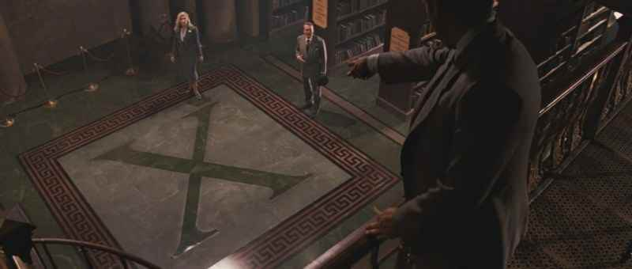

Anne-Gaëlle et Samy se marient
Oui, oui, nouvelle garantie! Mais vous avez peut-être des questions à ce propos? Répondons-y.
Où?

Le mariage se déroulera à Chatillon sur Seine, à 1h de Dijon et 2h30 de Paris.
En voiture:
Les doux vallons de l'autoroute A5 et A6 peuvent nous amener à nous.
En train:
La gare la plus proche est Montbard. Deux minutes d'arrêt.
Quand?
Bonne question Doc!
Quel est le dresscode?
Booyah, lâchez vous!
Ou peut-on loger?
Et les enfants?
Avez-vous une liste de mariage?
Autrefois pour faire sa cour On parlait d'amour Pour mieux prouver son ardeur On offrait son coeur Maintenant c'est plus pareil Ça change ça change Pour séduire le cher ange On lui glisse à l'oreille Ah Gudule, viens m'embrasser, et je te donnerai... Un frigidaire, un joli scooter, un atomixer Et du Dunlopillo Une cuisinière, avec un four en verre Des tas de couverts et des pelles à gâteau! Une tourniquette pour faire la vinaigrette Un bel aérateur pour bouffer les odeurs Des draps qui chauffent Un pistolet à gaufres Un avion pour deux... Et nous serons heureux! Autrefois s'il arrivait Que l'on se querelle L'air lugubre on s'en allait En laissant la vaisselle Maintenant que voulez-vous La vie est si chère On dit: "rentre chez ta mère" Et on se garde tout Ah Gudule, excuse-toi, ou je reprends tout ça... Mon frigidaire, mon armoire à cuillers Mon évier en fer, et mon poêle à mazout Mon cire-godasses, mon repasse-limaces Mon tabouret-à-glace et mon chasse-filous! La tourniquette, à faire la vinaigrette Le ratatine ordures et le coupe friture Et si la belle se montre encore rebelle On la ficelle dehors, pour confier son sort... Au frigidaire, à l'efface-poussière A la cuisinière, au lit qu'est toujours fait Au chauffe-savates, au canon à patates A l'éventre-tomate, à l'écorche-poulet! Mais très très vite On reçoit la visite D'une tendre petite Qui vous offre son coeur Alors on cède Car il faut qu'on s'entraide Et l'on vit comme ça jusqu'à la prochaine fois Et l'on vit comme ça jusqu'à la prochaine fois Et l'on vit comme ça jusqu'à la prochaine fois